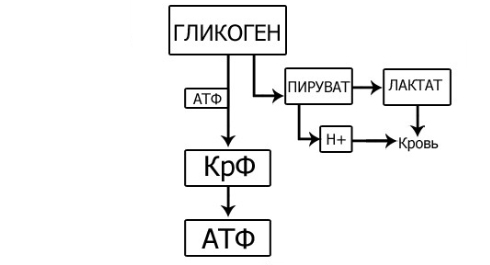
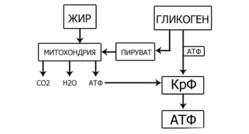

Благодаря рекламе мы знаем, что не все йогурты одинаково полезны, ну а благодаря программе SOTKA вы сегодня узнаете о том, что не все мышечные волокна в нашем теле одинаковые.
Конечно, можно тренироваться, основываясь на собственном опыте и эмпирическом знании (и иногда именно так и нужно делать), но также очень важно иметь понимание того, что стоит за эмпирическими результатами. А для этого нужно разобраться в теоретических аспектах, и сегодня мы начинаем серию постов, в которых будем опираться на научные основы, на физиологию и биохимию, применительно к тренировкам. Сразу скажем, что существует две основных классификации мышечных волокон: по скорости сокращения и по типу энергообеспечения . Давайте рассмотрим каждую из них более подробно.
Классификация мышц по скорости сокращения
Глобально мышечные волокна скелетных мышц бывают двух видов: медленные и быстрые. И у разных людей они в организме находятся в разных соотношениях, у кого-то больше, у кого-то меньше. Например, если больше медленных, то человек более расположен стать бегуном на длинные дистанции, а если быстрых, то спринтером. Это задается генетически и с этим, к сожалению, ничего нельзя поделать.Тип I: Медленные Мышечные Волокна (красные)
Скорость сокращения волокон этого типа довольно низкая, однако они способны непрерывно сокращаться в течение длительного времени за счет кислородного окисления (об этом будет ниже).
Красные волокна небольшого диаметра, окружены массой капилляров (маленькие кровеносные сосуды) и содержат много белка миоглобина, который запасает в себе кислород и отдает его митохондриям (фактически он служит для транспортировки кислорода), если с кровью его поступает недостаточно. Многочисленные митохондрии (энергетические станции, про них будет далее подробнее) красных волокон имеют высокий уровень активности окислительных ферментов, которые позволяют им превращать в энергию углеводы и жирные кислоты.
Тип II: Быстрые Мышечные Волокна (белые)
Скорость сокращения волокон этого типа довольно высокая (40-100% от максимума), однако они не рассчитаны на продолжительную работу из-за особенностей их энергетического обеспечения. Обеспечение энергией происходит за счет анаэробного гликолиза (об этом тоже будет ниже), а этот механизм работает только в течение очень непродолжительного времени (примерно 30-60 секунд).
Белые мышечные волокна имеют большой диаметр, в них содержится большое количество гликогена (сложный углевод, состоящий из глюкозы, и представляющий собой энергетические резервы организма), в то время как митохондрий немного. Из ферментов преобладают гликолитические (расщепляющие гликоген до глюкозы – основного источника энергии нашего организма).
Отдельно выделяют два подтипа белых мышечных волокон. Подтип IIа и IIб.
Подтип IIа (промежуточные волокна)
Эти мышечные волокна могут использовать в равной степени как кислородный, так и бескислородный обмен веществ в качестве механизма энергообеспечения. По сути, такие волокна представляют собой нечто среднее между быстрыми и медленными (от 25% до 40% максимального сокращения).
Подтип IIб
Это истинные быстрые мышечные волокна, они используют только бескислородный обмен веществ. В них вообще отсутствует белок миоглобин, но при этом они обладают максимальной силой и скоростью сокращений.
Классификация мышц по типу энергообеспечения
Основным топливом для всех структур клетки является Аденозинтрифосфа́т, сокращенно АТФ. АТФ известен как универсальный источник энергии для всех биохимических процессов протекающих в живых системах. АТФ получают из всех остальных источников, которые человек не может использовать напрямую, а должен использовать для пополнения запасов АТФ. Это можно сравнить с переработкой различных видов топлива - угля, торфа, дизеля и т.д. в электричество, которое уже затем можно использовать в качестве питания для всего.После того как запасы АТФ в мышцах израсходованы, а это происходит буквально за пару секунд, организм начинает искать источники для восполнения запасов АТФ и продолжения работы.
Первым источником, который используется для ресинтезирования АТФ является креатинфосфат (КрФ). Этот механизм энергообеспечения так и называется креатинфосфокиназный. И хотя его запасы в мышцах в несколько раз превышают запасы АТФ, его тоже хватает очень ненадолго (около 30-60 секунд). Можете представить этот источник в виде батареи, запасы которой, правда, довольно малы. Однако при использовании энергии креатинфосфата в организме возникают свободный Креатин и свободный Фосфат, которые стимулируют деятельность других механизмов энергообеспечения.
Эти механизмы можно разделить на две группы:
- Не использующие кислород (анаэробные)
- Использующие кислород (аэробные)
Постараемся максимально просто объяснить оба этих механизма. Начнем с анаэробного, схема которого выглядит так:

После того, как креатинфосфат (КрФ) у нас закончился, организм начинает использовать глюкозу, запасенную в гликогене, для создания молекул АТФ, которые будут направлены на пополнение запасов креатинфосфата. А креатинфосфат, в свою очередь, будет уже восполнять запасы АТФ, которые были израсходованы в процессе работы мышечного волокна.
Параллельно образуется пируват (пировиноградная кислота, продукт метаболизма глюкозы) и ионы водорода. Если организм не успевает нейтрализовать растущее число ионов водорода, то они накапливаются и начинают вызывать то самое чувство жжения в мышце, с которым многие из вас сталкивались в процессе выполнения упражнений. Стоит отметить, что по мере накопления ионы водорода начинают разрушать молекулы внутри белка, что может привести к его гибели.
Именно накопление ионов водорода до максимума является тем пределом, который ограничивает продолжительность использования данного механизма энергообеспечения. Если выражаться в цифрах, то для этого требуется всего около 60 секунд.
Теперь перейдем ко второму механизму. Схема аэробного гликолиза будет выглядеть следующим образом:

В отличие от предыдущего варианта, в этой схеме присутствует также новый элемент под названием Митохондрии. Фактически - это энергетические станции клетки, основная функция которых окисление органических соединений и использование освобождающейся при их распаде энергии для синтеза АТФ.
Благодаря им пируват, который образуется в процессе гликолиза, вместо того, чтобы превратиться в лактат и привести к накоплению ионов водорода, будет отправлен внутрь митохондрии и превратится в CO2, H2O и молекулы АТФ, которые тоже пойдут на восстановление запасов креатинфосфата (КрФ). А поскольку ионы водорода не образуются, среда не закисляется и мышцы могут сокращаться очень долго.
Если сильно всё упрощать, то наша выносливость зависит от количества митохондрий в клетках: чем больше митохондрий, тем более выносливыми мы будем и тем большее количество повторений, например, можем выполнить.
Типы мышечных волокон: ГМВ и ОМВ
Мышечные волокна, в которых мало митохондрий, и которые, соответственно, обеспечиваются энергией бескислородным способом, называются Гликолитическими Мышечными Волокнами (ГМВ).
Когда ионы водорода накоплены до максимума, то мышечные волокна вообще перестают сокращаться, а человек чувствует острое локальное утомление.
Мышечные волокна, в которых много митохондрий, и которые, соответственно, обеспечиваются энергией кислородным способом, называются Окислительными Мышечными Волокнами (ОМВ). ОМВ не закисляются, а это значит, что они практически неутомляемы. Более того, аэробный гликолиз примерно в 18-20 раз эффективнее анаэробного, поскольку из одной молекулы глюкозы получает 38 молекул АТФ против 2!
А теперь два приятных для вас момента:
1. В отличие от быстрых и медленных мышечных волокон (БМВ и ММВ, соответственно), по гликолитическому и окислительному принципу мышечные волокна не наследуются.
2. Количество митохондрий в мышечном волокне можно увеличить! И именно этим нужно заниматься, если вы хотите делать больше повторений в упражнениях. Но делать это, естественно, можно в определенных рамках, заложенных в нас генетически.
Заключение
Теперь вы знаете, что ваши мышцы состоят из двух типов волокон, которые были спроектированы для совершения разных типов работы. Одни используются, когда организму требуется много сил в короткий промежуток времени, другие, когда нужно не так много сил, но в течение долгого времени. Соответственно, чтобы полноценно развиваться вам необходимо включать в свои тренировки нагрузку и для первых, и для вторых (смещая акценты в зависимости от индивидуальных целей).
Но не нужно путать две классификации между собой, как делают многие читатели, делая вывод, что быстрые волокна — всегда гликолитические, а медленные - окислительные. И если генетику (соотношение БМВ и ММВ) не переделать, то в плане энергообеспечения ваших мышечных волокон (а значит и вашей выносливости), все совсем наоборот. И количество ОМВ можно растить. Но, для этого нужны правильно составленные тренировки, и о них мы ещё поговорим в одном из следующих инфопостов!
Источники
1. Skeletal muscle energy metabolism and fatigue during intense exercise in man. E Hultman, P L Greenhaff. Sci Prog. 1991;75(298 Pt 3-4):361-70.